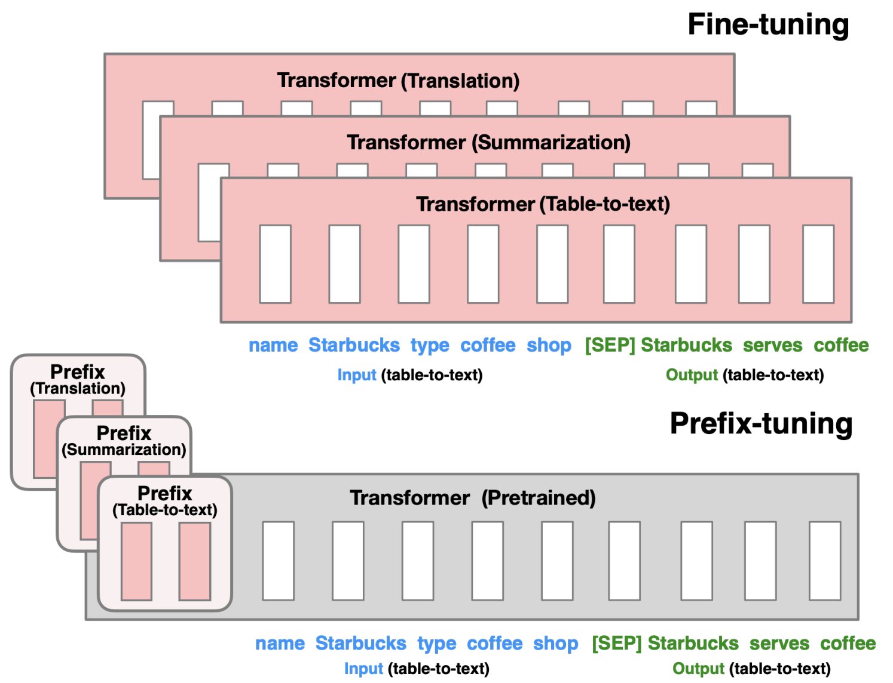
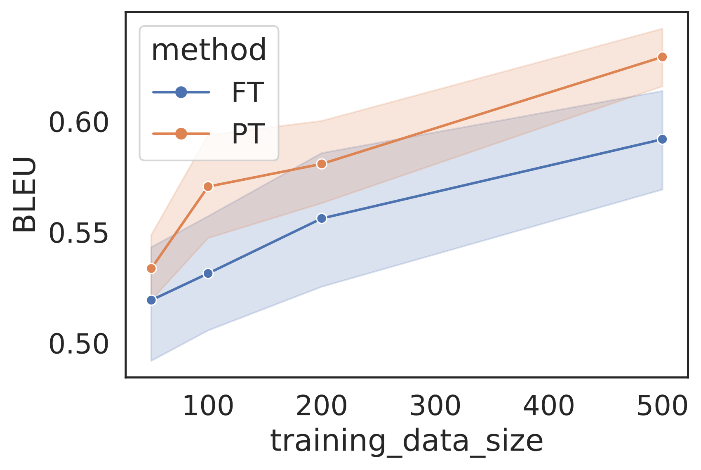
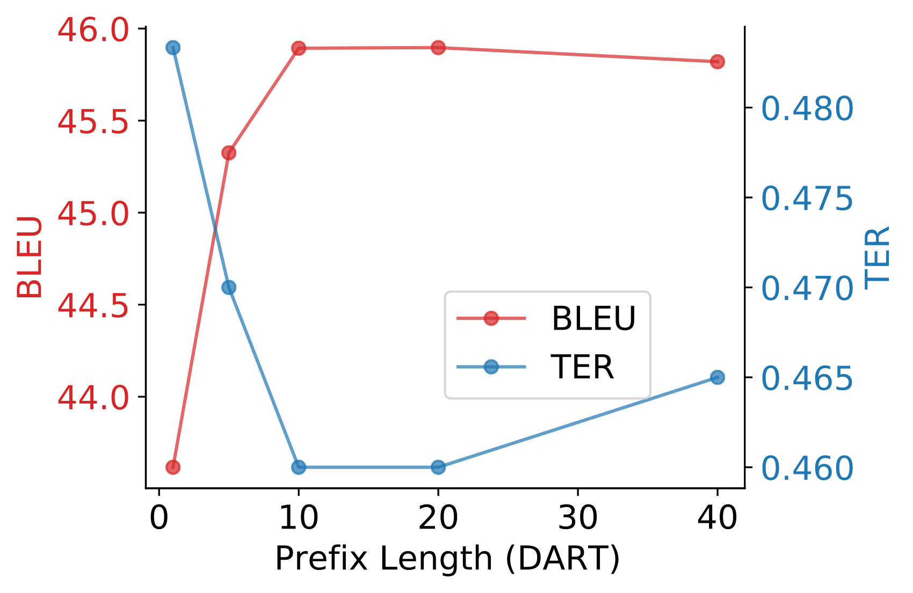
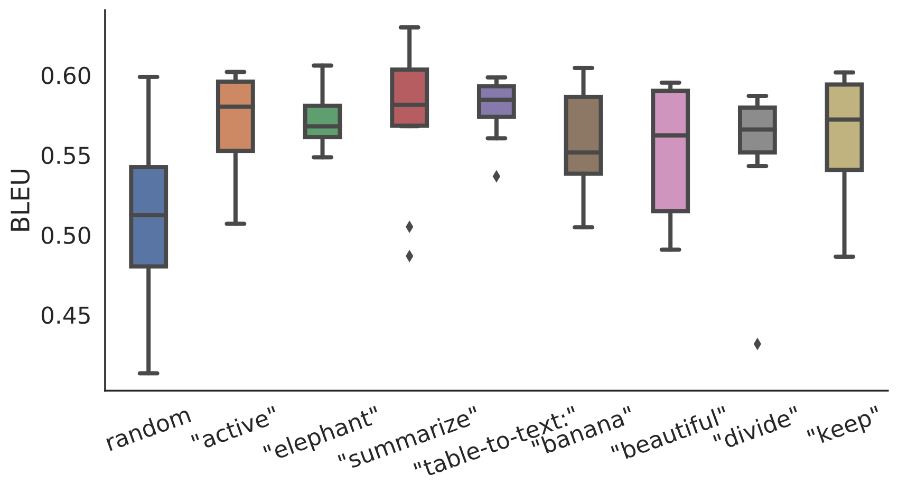
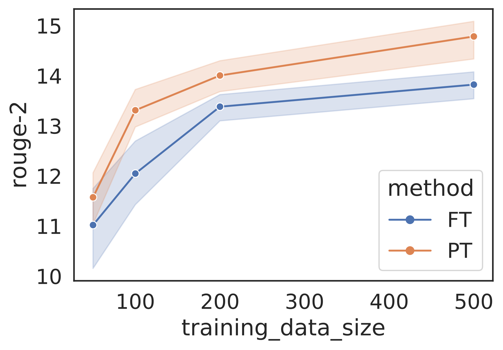
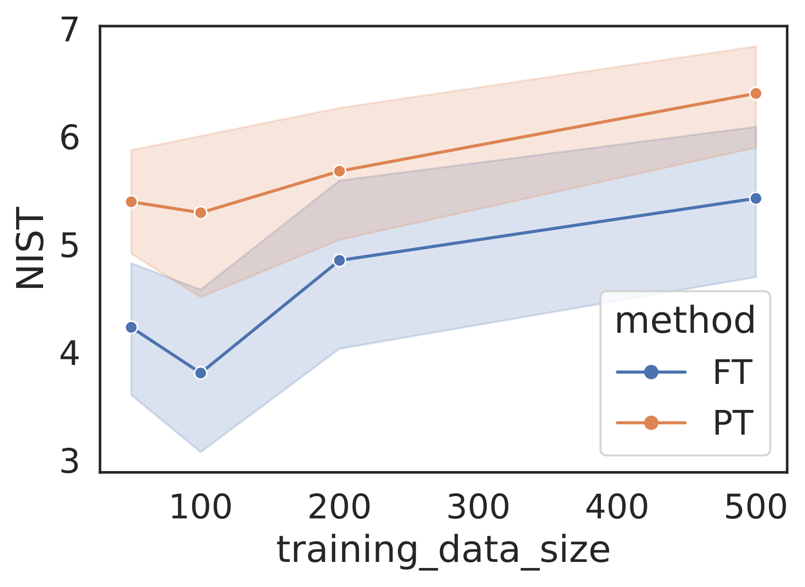
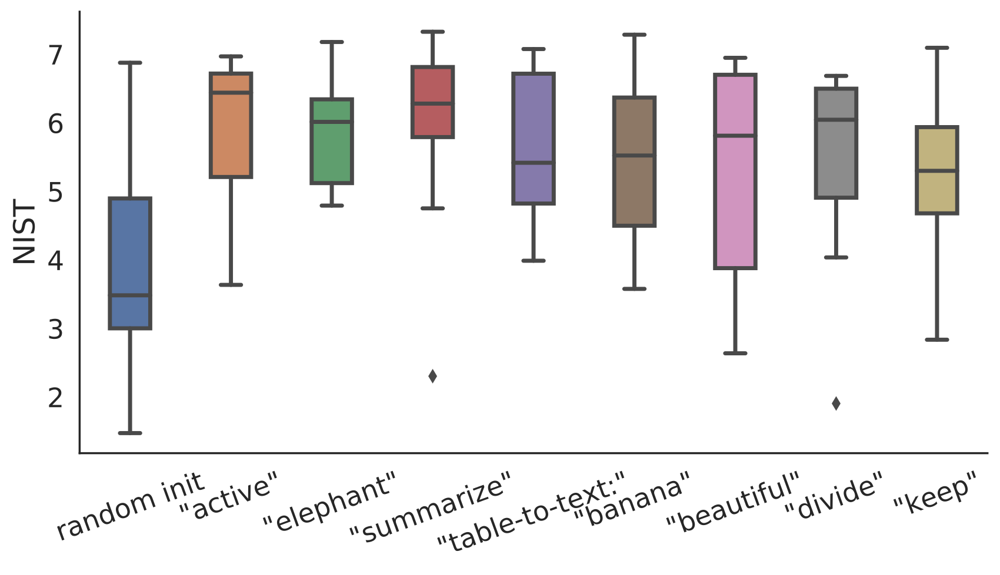

Prefix-Tuning：为生成任务优化连续提示¶
原文：arXiv:2101.00190v1，作者及机构信息见下。 中文全译稿：以机器初译为底稿，统一技术术语，并校订摘要和关键方法段落；覆盖主文、附录、表格、图注和脚注。参考文献保留原始书目，原图内部文字保留英文。英文转写见 en.md，方法分析另见 Prefix-Tuning详解.md。
作者与机构¶
Authors and affiliations¶
Xiang Lisa Li Affiliation: Stanford University Email: xlisali@stanford.edu Percy Liang Affiliation: Stanford University Email: pliang@cs.stanford.edu
摘要¶
微调是利用大型预训练语言模型完成下游任务的事实标准。然而，它会修改语言模型的全部参数，因此每个任务都需要存储一份完整副本。本文提出 Prefix-Tuning，一种面向自然语言生成任务的轻量替代方案：保持语言模型参数冻结，仅优化一小组连续的任务专用向量，称为前缀。Prefix-Tuning 受到提示方法启发，允许后续 token 像读取“虚拟 token”一样通过注意力读取前缀。我们将它用于 GPT-2 的表格到文本生成和 BART 的摘要任务。结果显示，仅学习 0.1% 的参数，Prefix-Tuning 在完整数据设置中取得可比表现，在低数据量设置中超过全量微调，并能更好地外推到训练中未见主题的样本。
简介¶
微调是使用大型预训练语言模型 (LM) 的普遍范例 Radford 等人。 (2019);德夫林等人。 （2019）执行下游任务（例如摘要），但它需要更新和存储 LM 的所有参数。因此，为了构建和部署依赖于大型预训练 LM 的 NLP 系统，当前需要为每项任务存储 LM 参数的修改副本。考虑到当前 LM 的规模很大，这可能会非常昂贵；例如，GPT-2 有 774M 个参数 Radford 等人。 (2019)，GPT-3 有 175B 参数 Brown 等人。 （2020）。

图 1：微调（顶部）更新所有 Transformer 参数（红色 Transformer 框），并需要为每个任务存储完整的模型副本。我们提出前缀调整（底部），它冻结 Transformer 参数并仅优化前缀（红色前缀块）。因此，我们只需要存储每个任务的前缀，从而使前缀调整模块化且节省空间。请注意，每个垂直块表示Transformer在一个时间步的激活。
解决这个问题的一个自然方法是轻量级微调，它冻结大部分预训练参数并使用小型可训练模块增强模型。例如，适配器调整 Rebuffi 等人。 (2017);霍尔斯比等人。 (2019) 在预训练语言模型的层之间插入额外的特定于任务的层。适配器调优在自然语言理解和生成基准方面具有良好的性能，通过微调获得可比的性能，同时仅添加大约 2-4% 的任务特定参数。 (2019);林等人。 （2020）。
在极端情况下，GPT-3 Brown 等人。 (2020) 无需任何特定于任务的调整即可部署。相反，用户在任务输入前面添加自然语言任务指令（例如，TL;DR 用于摘要）和一些示例；然后生成 LM 的输出。这种方法被称为情境学习或提示。
在本文中，我们提出了前缀微调，这是一种轻量级的自然语言生成（NLG）任务微调替代方案，其灵感来自于提示。考虑生成数据表文本描述的任务，如图 1 所示，其中任务输入是线性化表（例如，“名称：星巴克 \(|\) 类型：咖啡店”），输出是文本描述（例如，“星巴克提供咖啡”）。前缀调整将一系列连续的特定于任务的向量添加到输入中，我们将其称为前缀，如图 1（底部）中的红色块所示。对于后续令牌，Transformer 可以处理前缀，就好像它是一系列“虚拟令牌”一样，但与提示不同，前缀完全由与真实令牌不对应的自由参数组成。与图 1（顶部）中的微调相反，微调会更新所有 Transformer 参数，因此需要为每个任务存储模型的调整副本，而前缀微调仅优化前缀。因此，我们只需要存储大型 Transformer 的一份副本和学习到的特定于任务的前缀，从而为每个附加任务产生非常小的开销（例如，表到文本的 250K 参数）。
与微调相反，前缀调整是模块化的：我们训练一个上游前缀，它引导下游的 LM，而下游的 LM 保持不变。因此，单个 LM 可以同时支持多个任务。在个性化背景下，任务对应于不同的用户 Shokri 和 Shmatikov (2015)；麦克马汉等人。 (2016)，我们可以为每个用户设置一个单独的前缀，仅根据该用户的数据进行训练，从而避免数据交叉污染。此外，基于前缀的架构使我们甚至能够在单个批次中处理来自多个用户/任务的示例，这是其他轻量级微调方法无法实现的。
我们使用 GPT-2 评估表到文本生成的前缀调整，并使用 BART 评估抽象摘要。在存储方面，前缀微调存储的参数比微调少 1000 倍。就在完整数据集上训练时的性能而言，前缀调整和微调在表到文本方面具有可比性（第 6.1 节），而前缀调整在摘要方面略有下降（第 6.2 节）。在低数据设置中，前缀调整在这两项任务上的平均性能优于微调（第 6.3 节）。前缀调整还可以更好地推断具有未见过的主题的表格（用于表格到文本）和文章（用于摘要）（第 6.4 节）。
相关工作¶
自然语言生成的微调。¶
当前最先进的自然语言生成系统基于微调预训练的语言模型。对于表到文本的生成，Kale (2020) 对序列到序列模型进行了微调（Raffel et al., 2020, T5;）。对于提取和抽象摘要，研究人员分别微调了掩码语言模型（Devlin et al., 2019，例如 BERT；）和编码解码器模型（Lewis et al., 2020，例如 BART；）。 (2020);刘和拉帕塔（2019）；拉斐尔等人。 （2020）。对于机器翻译和对话生成等其他条件 NLG 任务，微调也是最流行的范式。 （2020c）；斯蒂克兰等人。 (2020);朱等人。 (2020);刘等人。 （2020）。在本文中，我们重点关注使用 GPT-2 的表到文本和使用 BART 的摘要，但前缀调整可以应用于其他生成任务和预训练模型。
轻量级微调。¶
轻量级微调冻结了大部分预训练参数，并用小型可训练模块修改了预训练模型。关键的挑战是确定模块的高性能架构和要调整的预训练参数子集。其中一项研究考虑删除参数：通过在模型参数上训练二元掩模来消除一些模型权重。 (2020); Radiya-Dixit 和 Wang (2020)。另一项研究考虑插入参数。例如，张等人。 (2020a) 训练一个“侧”网络，该网络通过求和与预训练模型融合；适配器调整在预训练的 LM Houlsby 等人的每一层之间插入特定于任务的层（适配器）。 (2019);林等人。 (2020);雷布菲等人。 (2017);菲佛等人。 （2020）。与围绕 \(3.6\%\) LM 参数进行调整的这一工作相比，我们的方法将特定于任务的参数进一步减少了 30 倍，仅调整了 0.1%，同时保持了相当的性能。
提示。¶
提示意味着在任务输入之前添加指令和一些示例，并从 LM 生成输出。 GPT-3 布朗等人。 （2020）使用手动设计的提示来适应不同任务的生成，该框架被称为上下文学习。然而，由于 Transformer 只能以有界长度的上下文为条件（例如，GPT-3 的 2048 个标记），因此上下文学习无法充分利用比上下文窗口长的训练集。 Sun and Lai (2020) 还通过关键词提示来控制生成句子的情绪或主题。在自然语言理解任务中，之前的工作中已经针对 BERT 和 RoBERTa 等模型探索了即时工程（Liu et al., 2019；Jiang et al., 2020；Schick and Schütze, 2020）。例如，AutoPrompt Shin 等人。 (2020) 搜索一系列离散的触发词并将其与每个输入连接起来，以从屏蔽的 LM 中引出情感或事实知识。与 AutoPrompt 相比，我们的方法优化了连续前缀，更具表现力（§7.2）；此外，我们专注于语言生成任务。
连续向量已被用于引导语言模型；例如，Subramani 等人。 (2020) 表明，预训练的 LSTM 语言模型可以通过优化每个句子的连续向量来重构任意句子，使向量输入特定。相反，前缀调整优化了适用于该任务的所有实例的特定于任务的前缀。因此，与之前的工作仅限于句子重建不同，前缀调整可以应用于 NLG 任务。
可控发电。¶
可控生成旨在引导预训练的语言模型匹配句子级属性（例如，积极情绪或体育主题）。这种控制可以在训练时发生：Keskar 等人。 (2019) 预训练语言模型 (CTRL) 以根据关键字或 URL 等元数据进行条件调整。此外，控制可以在解码时进行，通过加权解码（Krause 等人，2020，GeDi）或迭代更新过去的激活（Dathathri 等人，2020，PPLM）。然而，没有直接的方法来应用这些可控生成技术来对生成的内容实施细粒度控制，如表到文本和摘要等任务的要求。
问题陈述¶

图 2：使用自回归 LM（顶部）和编码器-解码器模型（底部）进行前缀调整的带注释示例。前缀激活 \(\forall i\in\textsf{P\){}_{\text{idx}}\(},h_{i}\) 是从可训练矩阵 \(P_{\theta}\) 中提取的。剩余的激活由 Transformer 计算。
考虑一个条件生成任务，其中输入是上下文 \(x\)，输出 \(y\) 是令牌序列。我们重点关注两个任务，如图2（右）所示：在表到文本中，\(x\)对应于线性化数据表，\(y\)是文本描述；总之，\(x\) 是一篇文章，\(y\) 是一个简短的摘要。
自回归LM¶
假设我们有一个基于 Transformer Vaswani 等人的自回归语言模型 \(p_{\phi}(y\mid x)\)。 (2017) 架构（Radford et al., 2019，例如 GPT-2；）并由 \(\phi\) 进行参数化。如图 2（上）所示，令 \(z=[x;y]\) 为 \(x\) 和 \(y\) 的串联；令 X \({}_{\text{idx}}\) 表示对应于 \(x\) 的索引序列，Y \({}_{\text{idx}}\) 表示与 \(y\) 相同的索引序列。
时间步 \(i\) 的激活是 \(h_{i}\in\mathbb{R}^{d}\) ，其中 \(h_{i}=[h_{i}^{(1)};\cdots;h_{i}^{(n)}]\) 是该时间步所有激活层的串联，而 \(h_{i}^{(j)}\) 是时间步 \(j\) 第 \(i\) 的 Transformer 层的激活。 1
自回归 Transformer 模型将 \(h_{i}\) 计算为 \(z_{i}\) 及其左侧上下文中过去激活的函数，如下所示：
其中 \(h_{i}\) 的最后一层用于计算下一个标记的分布：\(p_{\phi}(z_{i+1}\mid h_{\leq i})=\Softmax(W_{\phi}~h_{i}^{(n)})\) 和 \(W_{\phi}\) 是一个预训练矩阵，它将 \(h_{i}^{(n)}\) 映射到词汇表上的 logits。
编码器-解码器架构¶
我们还可以使用编码器-解码器架构（Lewis et al., 2020，例如 BART；）来建模 \(p_{\phi}(y\mid x)\)，其中 \(x\) 由双向编码器编码，解码器自回归预测 \(y\)（以编码的 \(x\) 及其左侧上下文为条件）。我们使用相同的索引和激活符号，如图 2（底部）所示。所有 \(i\in\textsf{X\){}{\text{idx}}\(}\) 的 \(h_{i}\) 都是由双向 Transformer 编码器计算得到的；所有 \(i\in\textsf{Y\){}}\(}\) 的 \(h_{i}\) 由自回归解码器使用相同的方程 1 计算。
方法：微调¶
在微调框架中，我们使用预训练参数 \(\phi\) 进行初始化。这里 \(p_{\phi}\) 是可训练的语言模型分布，我们对以下对数似然目标执行梯度更新：
前缀调整¶
我们建议前缀调整作为条件生成任务微调的替代方案。在第 4.2 节中正式定义我们的方法之前，我们首先在第 4.1 节中提供直觉。
直觉¶
根据提示方法的直觉，我们认为，合适的上下文能够引导语言模型，而无需修改其参数。例如，要让模型生成某个词（如 Obama），可以先提供它的常见搭配（如 Barack），模型便会给目标词分配更高概率。将此直觉从单词或句子扩展到任务层面，我们希望找到一种上下文，引导模型解决自然语言生成任务。直观上，上下文可以指导从 \(x\) 中提取什么，影响 \(x\) 的编码；也可以引导下一 token 的概率分布，影响 \(y\) 的生成。但这样的上下文是否存在，并不显然。自然语言任务指令（如“用一句话概括下表”）可能帮助专家标注者完成任务，却无法引导多数预训练语言模型。 2 对离散指令进行数据驱动优化也许有用，但离散优化的计算具有挑战性。
我们可以将指令优化为连续词嵌入，而不是对离散令牌进行优化，其效果将向上传播到所有 Transformer 激活层并向右传播到后续令牌。严格来说，这比需要匹配真实单词嵌入的离散提示更具表现力。同时，这比干预所有激活层（第 7.2 节）的表现力要差，后者避免了长程依赖性并包含更多可调参数。因此，前缀调整可以优化前缀的所有层。
方法¶
前缀调整为自回归LM添加前缀以获得\(z=[\textsc{Prefix};x;y]\)，或者为编码器和编码器添加前缀以获得\(z=[\textsc{Prefix};x;\textsc{Prefix}^{\prime};y]\)，如图2所示。这里，P \({}_{\text{idx}}\) 表示前缀索引的序列，我们使用 \(|\textsf{P\){}_{\text{idx}}\(}|\) 表示前缀的长度。
我们遵循等式 1 中的递推关系，只是前缀是自由参数。前缀调整初始化维度为 \(|\textsf{P\){}_{\text{idx}}\(}|\times\dim(h_{i})\) 的可训练矩阵 \(P_{\theta}\) （由 \(\theta\) 参数化）来存储前缀参数。
训练目标与等式2相同，但可训练参数集发生变化：语言模型参数\(\phi\)是固定的，前缀参数\(\theta\)是唯一的可训练参数。
这里， \(h_{i}\) （对于所有 \(i\) ）是可训练的 \(P_{\theta}\) 的函数。当 \(i\in\textsf{P\){}{\text{idx}}\(}\) 时，这一点很清楚，因为 \(h_{i}\) 直接从 \(P_{\theta}\) 复制。当 \(i\not\in\textsf{P\){}}\(}\) 时， \(h_{i}\) 仍然依赖于 \(P_{\theta}\) ，因为前缀激活始终位于左侧上下文中，因此会影响其右侧的任何激活。
\(P_{\theta}\)的参数化¶
经验上，直接更新 \(P_{\theta}\) 会导致优化不稳定，并略微降低性能。 3 因此，我们用较小矩阵 \(P^{\prime}_{\theta}\) 与一个较大的前馈网络 \(\textsc{MLP}_{\theta}\) 组合，将前缀重参数化为 \(P_{\theta}[i,:]=\textsc{MLP}_{\theta}(P^{\prime}_{\theta}[i,:])\)。注意，\(P_{\theta}\) 与 \(P^{\prime}_{\theta}\) 行数相同，即前缀长度相同，但列数不同。 4 训练结束后，这些重参数化参数可以丢弃，只需保存前缀 \(P_{\theta}\)。
实验装置¶
数据集和指标¶
我们评估了表到文本任务的三个标准神经生成数据集：E2E Novikova 等人。 (2017)，WebNLG Gardent 等人。 (2017) 和 DART Radev 等人。 （2020）。数据集按照复杂性和大小的增加进行排序。 E2E只有\(1\)域名（即餐厅评论）； WebNLG 具有 \(14\) 域，DART 是开放域，使用来自 Wikipedia 的开放域表。
E2E数据集包含大约5万个示例，具有8个不同的字段；它包含一个源表的多个测试引用，平均输出长度为 \(22.9\) 。我们使用官方评估脚本，该脚本报告了 BLEU Papineni 等人。 (2002)、NIST Belz 和 Reiter (2006)、METEOR Lavie 和 Agarwal (2007)、ROUGE-L Lin (2004) 和 CIDEr Vedantam 等人。 （2015）。
WebNLG Gardent 等人。 (2017) 数据集由 22K 个示例组成，输入 \(x\) 是（主题、属性、对象）三元组的序列。平均输出长度为 \(22.5\) 。在训练和验证分割中，输入描述来自 \(9\) 不同 DBpedia 类别的实体（例如纪念碑）。测试分割由两部分组成：前半部分包含训练数据中看到的 DB 类别，后半部分包含 \(5\) 未见过的类别。这些看不见的类别用于评估外推法。我们使用官方评估脚本，其中报告了 BLEU、METEOR 和 TER Snover 等。 （2006）。
达特·拉德夫等人。 (2020) 是一个开放域表到文本数据集，具有与 WebNLG 类似的输入格式（实体-关系-实体三元组）。平均输出长度为 \(21.6\) 。它由来自 WikiSQL、WikiTableQuestions、E2E 和 WebNLG 的 82K 示例组成，并应用了一些手动或自动转换。我们使用官方评估脚本并报告 BLEU、METEOR、TER、MoverScore Zhao 等。 (2019)，BERTScore 张等人。 (2020b) 和 BLEURT Sellam 等人。 （2020）。
对于摘要任务，我们使用 XSUM Narayan 等人。 (2018) 数据集，这是一个关于新闻文章的抽象摘要数据集。有 225K 个示例。文章平均长度为431字，摘要平均长度为23.3字。我们报告 ROUGE-1、ROUGE-2 和 ROUGE-L。
方法¶
对于表到文本的生成，我们将前缀调整与其他三种方法进行比较：微调（ Fine-tune ）、仅微调顶部 2 层（ FT-top2 ）和适配器调整（ Adapter ）。 5 我们还报告了这些数据集上当前最先进的结果：On E2E，Shen 等人。 （2019）使用了一种实用的、无需预训练的模型。在 WebNLG 上，Kale (2020) 对 T5-large 进行了微调。在 DART 上，没有发布在此数据集版本上训练的官方模型。 6 作为总结，我们与微调 BART Lewis 等人进行比较。 （2020）。
架构和超参数¶
对于表到文本，我们使用 GPT-2 \({}_{\textsc{MEDIUM}}\) 和 GPT-2 \({}_{\textsc{LARGE}}\) ；源表已线性化。 7 为了进行总结，我们使用 BART \({}_{\textsc{LARGE}}\) 、 8 ，源文章被截断为 \(512\) BPE token。
我们的实现基于 Wolf 等人的 Hugging Face Transformer 模型。 （2020）。在训练时，我们使用 AdamW 优化器 Loshchilov 和 Hutter (2019) 和线性学习率调度器，如 Hugging Face 默认设置所建议的那样。我们调整的超参数包括轮数、批量大小、学习率和前缀长度。超参数详细信息在附录中。默认设置为 \(10\) 纪元进行训练，使用批量大小 \(5\) 、学习率 \(5\cdot 10^{-5}\) 和前缀长度 \(10\) 。表到文本模型在 TITAN Xp 或 GeForce GTX TITAN X 机器上进行训练。前缀微调每个周期需要 \(0.2\) 小时来训练 22K 个示例，而微调则需要大约 \(0.3\) 小时。汇总模型在 Tesla V100 机器上进行训练，在 XSUM 数据集上每个时期采用 \(1.25\) h。
在解码时，对于三个表到文本数据集，我们使用波束大小为 \(5\) 的波束搜索。为了总结，我们使用 \(6\) 的光束尺寸和 \(0.8\) 的长度归一化。对于表到文本，解码每个句子（不进行批处理）需要 \(1.2\) 秒，对于摘要，每个批次（使用批量大小为 10）需要 \(2.6\) 秒。
主要结果¶
| E2E | E2E | E2E | E2E | E2E | 网络NLG | 网络NLG | 网络NLG | 网络NLG | 网络NLG | 网络NLG | 网络NLG | 网络NLG | 网络NLG | 飞镖 | 飞镖 | 飞镖 | 飞镖 | 飞镖 | 飞镖 | |
|---|---|---|---|---|---|---|---|---|---|---|---|---|---|---|---|---|---|---|---|---|
| 蓝线 | 美国国家标准技术研究院 | 梅特 | R-L | 西德 | 蓝线 | 蓝线 | 蓝线 | 梅特 | 梅特 | 梅特 | TER \(\downarrow\) | TER \(\downarrow\) | TER \(\downarrow\) | 蓝线 | 梅特 | TER \(\downarrow\) | 搬运工 | 伯特 | 布鲁尔特 | |
| S | U | A | S | U | A | S | U | A | ||||||||||||
| GPT-2 \({}_{\textsc{MEDIUM}}\) | GPT-2 \({}_{\textsc{MEDIUM}}\) | GPT-2 \({}_{\textsc{MEDIUM}}\) | GPT-2 \({}_{\textsc{MEDIUM}}\) | GPT-2 \({}_{\textsc{MEDIUM}}\) | GPT-2 \({}_{\textsc{MEDIUM}}\) | GPT-2 \({}_{\textsc{MEDIUM}}\) | GPT-2 \({}_{\textsc{MEDIUM}}\) | GPT-2 \({}_{\textsc{MEDIUM}}\) | GPT-2 \({}_{\textsc{MEDIUM}}\) | GPT-2 \({}_{\textsc{MEDIUM}}\) | GPT-2 \({}_{\textsc{MEDIUM}}\) | GPT-2 \({}_{\textsc{MEDIUM}}\) | GPT-2 \({}_{\textsc{MEDIUM}}\) | GPT-2 \({}_{\textsc{MEDIUM}}\) | GPT-2 \({}_{\textsc{MEDIUM}}\) | GPT-2 \({}_{\textsc{MEDIUM}}\) | GPT-2 \({}_{\textsc{MEDIUM}}\) | GPT-2 \({}_{\textsc{MEDIUM}}\) | GPT-2 \({}_{\textsc{MEDIUM}}\) | |
| 微调 | 68.2 | 8.62 | 46.2 | 71.0 | 2.47 | 64.2 | 27.7 | 46.5 | 0.45 | 0.30 | 0.38 | 0.33 | 0.76 | 0.53 | 46.2 | 0.39 | 0.46 | 0.50 | 0.94 | 0.39 |
| FT-top2 | 68.1 | 8.59 | 46.0 | 70.8 | 2.41 | 53.6 | 18.9 | 36.0 | 0.38 | 0.23 | 0.31 | 0.49 | 0.99 | 0.72 | 41.0 | 0.34 | 0.56 | 0.43 | 0.93 | 0.21 |
| 适配器 (3%) | 68.9 | 8.71 | 46.1 | 71.3 | 2.47 | 60.4 | 48.3 | 54.9 | 0.43 | 0.38 | 0.41 | 0.35 | 0.45 | 0.39 | 45.2 | 0.38 | 0.46 | 0.50 | 0.94 | 0.39 |
| 适配器 (0.1%) | 66.3 | 8.41 | 45.0 | 69.8 | 2.40 | 54.5 | 45.1 | 50.2 | 0.39 | 0.36 | 0.38 | 0.40 | 0.46 | 0.43 | 42.4 | 0.36 | 0.48 | 0.47 | 0.94 | 0.33 |
| 前缀 (0.1%) | 69.7 | 8.81 | 46.1 | 71.4 | 2.49 | 62.9 | 45.6 | 55.1 | 0.44 | 0.38 | 0.41 | 0.35 | 0.49 | 0.41 | 46.4 | 0.38 | 0.46 | 0.50 | 0.94 | 0.39 |
| GPT-2 \({}_{\textsc{LARGE}}\) | GPT-2 \({}_{\textsc{LARGE}}\) | GPT-2 \({}_{\textsc{LARGE}}\) | GPT-2 \({}_{\textsc{LARGE}}\) | GPT-2 \({}_{\textsc{LARGE}}\) | GPT-2 \({}_{\textsc{LARGE}}\) | GPT-2 \({}_{\textsc{LARGE}}\) | GPT-2 \({}_{\textsc{LARGE}}\) | GPT-2 \({}_{\textsc{LARGE}}\) | GPT-2 \({}_{\textsc{LARGE}}\) | GPT-2 \({}_{\textsc{LARGE}}\) | GPT-2 \({}_{\textsc{LARGE}}\) | GPT-2 \({}_{\textsc{LARGE}}\) | GPT-2 \({}_{\textsc{LARGE}}\) | GPT-2 \({}_{\textsc{LARGE}}\) | GPT-2 \({}_{\textsc{LARGE}}\) | GPT-2 \({}_{\textsc{LARGE}}\) | GPT-2 \({}_{\textsc{LARGE}}\) | GPT-2 \({}_{\textsc{LARGE}}\) | GPT-2 \({}_{\textsc{LARGE}}\) | |
| 微调 | 68.5 | 8.78 | 46.0 | 69.9 | 2.45 | 65.3 | 43.1 | 55.5 | 0.46 | 0.38 | 0.42 | 0.33 | 0.53 | 0.42 | 47.0 | 0.39 | 0.46 | 0.51 | 0.94 | 0.40 |
| 前缀 | 70.3 | 8.85 | 46.2 | 71.7 | 2.47 | 63.4 | 47.7 | 56.3 | 0.45 | 0.39 | 0.42 | 0.34 | 0.48 | 0.40 | 46.7 | 0.39 | 0.45 | 0.51 | 0.94 | 0.40 |
| 索塔 | 68.6 | 8.70 | 45.3 | 70.8 | 2.37 | 63.9 | 52.8 | 57.1 | 0.46 | 0.41 | 0.44 | - | - | - | - | - | - | - | - | - |
表 1：E2E（左）、WebNLG（中）和 DART（右）上表到文本生成的指标（越高越好，TER 除外）。仅使用 \(0.1\%\) 参数，前缀调整就优于其他轻量级基线，并通过微调实现了可比的性能。 GPT-2 \({}_{\textsc{MEDIUM}}\) 和 GPT-2 \({}_{\textsc{LARGE}}\) 的最佳分数均以粗体显示。
表到文本的生成¶
我们发现，仅添加 0.1% 的特定于任务的参数，9 前缀微调在表格到文本的生成中是有效的，优于其他轻量级基线（ Adapter 和 FT-top2 ），并通过微调实现了可比的性能。这一趋势在所有三个数据集上都是如此：E2E、WebNLG、10 和 DART。
为了公平比较，我们将前缀调整和适配器调整的参数数量匹配为 0.1%。表 1 显示前缀调整明显优于 Adapter (0.1%)，平均每个数据集实现了 \(4.1\) BLEU 改进。即使我们与微调（100％）和适配器调整（3.0％）相比，它们比前缀调整更新了更多的参数，前缀调整仍然达到了与这两个系统相当或更好的结果。这表明前缀调整比适配器调整更具帕累托效率，可显着减少参数，同时提高生成质量。
此外，在 DART 上获得良好的性能表明前缀调整可以推广到具有不同域和大量关系的表。我们将在第 6.4 节中更深入地研究外推性能（即对未见过的类别或主题的泛化）。
总的来说，前缀调整是一种有效且节省空间的方法，可以使 GPT-2 适应表到文本的生成。学习到的前缀具有足够的表达能力，可以引导 GPT-2 正确地从非自然格式中提取内容并生成文本描述。前缀调整也可以很好地从 GPT-2 \({}_{\textsc{MEDIUM}}\) 扩展到 GPT-2 \({}_{\textsc{LARGE}}\) ，这表明它有潜力扩展到具有类似架构的更大模型，例如 GPT-3。




图 3：（左）低数据设置中的定性示例。 （右）除了需要更少的参数外，前缀调整（橙色）在低数据情况下的性能优于微调（蓝色）。顶部两个图对应于由 ROUGE-1 和 ROUGE-2 测量的汇总。底部两个图对应于表格到文本，由 BLEU 和 ROUGE-L 测量。 x 轴是训练规模，y 轴是评估指标（越高越好）。
总结¶
| R-1 \(\uparrow\) | R-2 \(\uparrow\) | R-L \(\uparrow\) | |
|---|---|---|---|
| 微调刘易斯等人。 (2020) | 45.14 | 22.27 | 37.25 |
| 前缀 (2%) | 43.80 | 20.93 | 36.05 |
| 前缀 (0.1%) | 42.92 | 20.03 | 35.05 |
表 2：XSUM 汇总指标。前缀调整的性能略低于微调。
如表2所示，在参数为2%的情况下，前缀微调获得的性能略低于微调（ROUGE-L中为36.05 vs. 37.25）。仅使用 0.1% 的参数，前缀调整的性能低于全量微调（35.05 与 37.25）。 XSUM 与三个表到文本数据集之间存在一些差异，这可以解释为什么前缀调整在表到文本方面具有比较优势：（1）XSUM 包含的示例平均比三个表到文本数据集多 4 倍； (2) 输入文章平均比表到文本数据集的线性化表输入长 17 倍； （3）摘要可能比表格到文本更复杂，因为它需要阅读理解并识别文章中的关键内容。
低数据设置¶
根据表到文本（第 6.1 节）和摘要（第 6.2 节）的结果，我们观察到当训练样本数量较少时，前缀调整具有相对优势。为了构建低数据设置，我们对完整数据集进行二次采样（E2E 用于表到文本，XSUM 用于汇总）以获得大小为 \(\{50,100,200,500\}\) 的小数据集。对于每个大小，我们对 \(5\) 不同的数据集进行采样，并对 \(2\) 训练随机种子进行平均。因此，我们对 \(10\) 模型进行平均，以获得每个低数据设置的估计值。 11
图 3（右）显示，前缀微调在低数据情况下的平均性能优于 \(2.9\) BLEU 的微调，而且需要的参数要少得多，但随着数据集大小的增加，差距会缩小。
定性地，图 3（左）显示了在不同数据级别上训练的前缀调整和微调模型生成的 \(8\) 示例。虽然这两种方法在低数据情况下往往会生成不足（缺少表内容），但前缀调整往往比微调更忠实。例如，微调 (100, 200) 12 错误地声称客户评级较低，而真实评级为平均，而前缀调整 (100, 200) 会生成忠实于表的描述。
外推法¶
我们现在研究对表格到文本和摘要的未见主题的外推性能。为了构建外推设置，我们分割了现有的数据集，以便训练和测试涵盖不同的主题。对于表到文本，WebNLG 数据集用表主题进行标记。有 \(9\) 类别出现在训练和开发中，表示为 SEEN，而 \(5\) 类别仅出现在测试时，表示为 UNSEEN。因此，我们通过对“SEEN”类别进行训练和对“UNSEEN”类别进行测试来评估外推法。为了总结，我们构建了两个外推数据分割 13 ：在 news-to-sports 中，我们用新闻文章进行训练，并用体育文章进行测试。在新闻内，我们对 \(\{\) 世界、英国、商业 \(\}\) 新闻进行训练，并对其余新闻类别（例如健康、技术）进行测试。
| 新闻转体育 | 新闻转体育 | 新闻转体育 | 新闻内幕 | 新闻内幕 | 新闻内幕 | |
|---|---|---|---|---|---|---|
| R-1 \(\uparrow\) | R-2 \(\uparrow\) | R-L \(\uparrow\) | R-1 \(\uparrow\) | R-2 \(\uparrow\) | R-L \(\uparrow\) | |
| 微调 | 38.15 | 15.51 | 30.26 | 39.20 | 16.35 | 31.15 |
| 前缀 | 39.23 | 16.74 | 31.51 | 39.41 | 16.87 | 31.47 |
表 3：XSUM 上的外推性能。在新闻到体育和新闻内分割方面，前缀调整优于微调。
在表到文本和摘要方面，前缀调整在所有指标下都比微调具有更好的外推能力，如表 3 和表 1 的“U”列（中）所示。
我们还发现适配器调整实现了良好的外推性能，与前缀调整相当，如表 1 所示。这一共同趋势表明，保留 LM 参数确实对外推有积极影响。然而，这种收益的原因是一个悬而未决的问题，我们将在第 8 节中进一步讨论。
内在评价¶
我们比较了前缀调整的不同变体。 § 7.1 研究了前缀长度的影响。 § 7.2 研究仅调整嵌入层，这更类似于调整离散提示。 § 7.3 比较了前缀和中固定，在 \(x\) 和 \(y\) 之间插入可训练的激活。 § 7.4 研究了各种前缀初始化策略的影响。
前缀长度¶


图 4：前缀长度与总结（左）和表到文本（右）的性能。随着前缀长度增加到阈值（摘要为 200，表到文本为 10），性能会提高，然后性能会略有下降。每个图报告两个指标（在两个垂直轴上）。
较长的前缀意味着更多的可训练参数，因此表达能力更强。图 4 显示，随着前缀长度增加到阈值（用于摘要的 \(200\)，用于表到文本的 \(10\)），性能会提高，然后性能会略有下降。 14
根据经验，较长的前缀对推理速度的影响可以忽略不计，因为整个前缀的注意力计算是在 GPU 上并行进行的。
完整与仅嵌入¶
| E2E | E2E | E2E | E2E | E2E | |
|---|---|---|---|---|---|
| 蓝线 | 美国国家标准技术研究院 | 梅特 | 胭脂 | 西德 | |
| 前缀 | 69.7 | 8.81 | 46.1 | 71.4 | 2.49 |
| 仅嵌入：Emb -{PrefixLength} | 仅嵌入：Emb -{PrefixLength} | 仅嵌入：Emb -{PrefixLength} | 仅嵌入：Emb -{PrefixLength} | 仅嵌入：Emb -{PrefixLength} | |
| 嵌入-1 | 48.1 | 3.33 | 32.1 | 60.2 | 1.10 |
| 嵌入-10 | 62.2 | 6.70 | 38.6 | 66.4 | 1.75 |
| 嵌入-20 | 61.9 | 7.11 | 39.3 | 65.6 | 1.85 |
| 中缀调整：中缀-{PrefixLength} | 中缀调整：中缀-{PrefixLength} | 中缀调整：中缀-{PrefixLength} | 中缀调整：中缀-{PrefixLength} | 中缀调整：中缀-{PrefixLength} | |
| 中缀-1 | 67.9 | 8.63 | 45.8 | 69.4 | 2.42 |
| 中缀-10 | 67.2 | 8.48 | 45.8 | 69.9 | 2.40 |
| 中缀-20 | 66.7 | 8.47 | 45.8 | 70.0 | 2.42 |
表 4：仅嵌入（第 7.2 节）和固定（第 7.3 节）的内在评估。仅嵌入消融和中缀调整的性能均低于完整前缀调整。
回想一下第 4.1 节，我们讨论了优化“虚拟令牌”连续嵌入的选项。我们将这个想法实例化，并将其称为仅嵌入消融。词嵌入是自由参数，上面的激活层由 Transformer 计算。表 4（上）显示性能显着下降，表明仅调整嵌入层的表现力不够。
仅嵌入消融限制了离散提示优化的性能上限 Shin 等人。 (2020) ，因为离散提示限制嵌入层与真实单词的嵌入完全匹配。因此，我们有了这条表达能力不断增强的链条：离散提示 \(<\) 仅嵌入消融 \(<\) 前缀调整。
前缀与中缀¶
我们还研究了可训练激活在序列中的位置如何影响性能。在前缀调整中，我们将它们放在 \([\textsc{Prefix};x;y]\) 的开头。我们还可以将可训练的激活放在 \(x\) 和 \(y\) 之间（即 \([x;\textsc{Infix};y]\) ），并将其称为中缀调整。表 4（底部）显示中缀调优的性能略低于前缀微调。我们认为这是因为前缀调整可以影响 \(x\) 和 \(y\) 的激活，而中缀调整只能影响 \(y\) 的激活。
初始化¶

图 5：在低数据设置中，通过激活真实单词来初始化前缀明显优于随机初始化。
我们发现前缀的初始化方式在低数据设置中有很大影响。随机初始化会导致性能低下且方差较大。使用实际单词的激活来初始化前缀可以显着提高生成速度，如图 5 所示。特别是，使用任务相关单词（例如“summarization”和“table-to-text”）进行初始化比使用任务无关单词（例如“elephant”和“divide”）获得稍好的性能，但使用真实单词仍然比随机单词更好。
由于我们使用 LM 计算的真实单词的激活值来初始化前缀，因此该初始化策略与尽可能保留预训练的 LM 是一致的。
讨论¶
在本节中，我们将讨论前缀调整的几个有利特性和一些未解决的问题。
个性化¶
正如我们在第 1 节中指出的，当有大量任务需要独立训练时，前缀调整是有利的。一种实用的设置是用户隐私 Shokri 和 Shmatikov (2015)；麦克马汉等人。 （2016）。为了保护用户隐私，需要分离每个用户的数据，并为每个用户独立训练个性化模型。因此，每个用户都可以被视为一个独立的任务。如果有数百万用户，前缀调整可以扩展到此设置并保持模块化，通过添加或删除用户的前缀来灵活添加或删除用户，而不会交叉污染。
跨用户批处理¶
在相同的个性化设置下，前缀调整允许批量处理不同用户的查询，即使它们由不同的前缀支持。当多个用户使用其输入查询云 GPU 设备时，将这些用户放入同一批次中可以提高计算效率。前缀调整保持共享 LM 完好无损；因此，批处理需要一个简单的步骤，即在用户输入前面添加个性化前缀，并且所有剩余的计算都保持不变。相比之下，我们无法在适配器调整中跨不同用户进行批处理，适配器调整在共享 Transformer 层之间具有个性化适配器。
前缀调整的归纳偏差¶
回想一下，微调会更新所有预训练的参数，而前缀调整和适配器调整会保留它们。由于语言模型是在通用语料库上进行预训练的，因此保留 LM 参数可能有助于泛化到训练期间未见过的领域。根据这种直觉，我们观察到前缀调整和适配器调整在外推设置中都有显着的性能增益（第 6.4 节）；然而，这种收益的原因仍然是一个悬而未决的问题。
虽然前缀调整和适配器调整都冻结了预训练参数，但它们调整不同的参数集来影响 Transformer 的激活层。回想一下，前缀调整使 LM 保持完整，并使用前缀和预训练的注意力块来影响后续激活；适配器调整在 LM 层之间插入可训练模块，直接将残差向量添加到激活中。此外，我们观察到，与适配器调整相比，前缀调整需要的参数少得多，同时保持可比较的性能。我们认为参数效率的提高是因为前缀调整尽可能保持预训练的 LM 完整，因此比适配器调整更多地利用 LM。
Aghajanyan 等人的同时工作。 （2020）使用内在维度来表明存在低维度重参数化，其与完整参数空间一样有效地进行微调。这解释了为什么仅更新少量参数就可以获得下游任务的良好准确性。我们的工作与这一发现相呼应，表明通过更新非常小的前缀可以获得良好的生成性能。
结论¶
我们提出了前缀微调，这是微调的一种轻量级替代方案，为 NLG 任务预先添加可训练的连续前缀。我们发现，尽管学习的参数比微调少 1000 倍，但前缀调整可以在完整数据设置中保持可比的性能，并且在低数据和外推设置中优于微调。
参考文献¶
-
Aghajanyan et al. (2020) Armen Aghajanyan, Luke Zettlemoyer, and Sonal Gupta. 2020. Intrinsic dimensionality explains the effectiveness of language model fine-tuning .
-
Belz and Reiter (2006) Anja Belz and Ehud Reiter. 2006. Comparing automatic and human evaluation of NLG systems . In 11th Conference of the European Chapter of the Association for Computational Linguistics , Trento, Italy. Association for Computational Linguistics.
-
Brown et al. (2020) Tom B. Brown, Benjamin Mann, Nick Ryder, Melanie Subbiah, Jared Kaplan, Prafulla Dhariwal, Arvind Neelakantan, Pranav Shyam, Girish Sastry, Amanda Askell, Sandhini Agarwal, Ariel Herbert-Voss, Gretchen Krueger, Tom Henighan, Rewon Child, Aditya Ramesh, Daniel M. Ziegler, Jeffrey Wu, Clemens Winter, Christopher Hesse, Mark Chen, Eric Sigler, Mateusz Litwin, Scott Gray, Benjamin Chess, Jack Clark, Christopher Berner, Sam McCandlish, Alec Radford, Ilya Sutskever, and Dario Amodei. 2020. Language models are few-shot learners .
-
Dathathri et al. (2020) Sumanth Dathathri, Andrea Madotto, Janice Lan, Jane Hung, Eric Frank, Piero Molino, Jason Yosinski, and Rosanne Liu. 2020. Plug and play language models: A simple approach to controlled text generation . In International Conference on Learning Representations .
-
Devlin et al. (2019) Jacob Devlin, Ming-Wei Chang, Kenton Lee, and Kristina Toutanova. 2019. BERT: Pre-training of deep bidirectional transformers for language understanding . In Proceedings of the 2019 Conference of the North American Chapter of the Association for Computational Linguistics: Human Language Technologies, Volume 1 (Long and Short Papers) , pages 4171–4186, Minneapolis, Minnesota. Association for Computational Linguistics.
-
Gardent et al. (2017) Claire Gardent, Anastasia Shimorina, Shashi Narayan, and Laura Perez-Beltrachini. 2017. The WebNLG challenge: Generating text from RDF data . In Proceedings of the 10th International Conference on Natural Language Generation , pages 124–133, Santiago de Compostela, Spain. Association for Computational Linguistics.
-
Houlsby et al. (2019) Neil Houlsby, Andrei Giurgiu, Stanislaw Jastrzebski, Bruna Morrone, Quentin De Laroussilhe, Andrea Gesmundo, Mona Attariyan, and Sylvain Gelly. 2019. Parameter-efficient transfer learning for NLP . In Proceedings of the 36th International Conference on Machine Learning , volume 97 of Proceedings of Machine Learning Research , pages 2790–2799, Long Beach, California, USA. PMLR.
-
Jiang et al. (2020) Zhengbao Jiang, Frank F. Xu, Jun Araki, and Graham Neubig. 2020. How can we know what language models know? Transactions of the Association for Computational Linguistics , 8:423–438.
-
Kale (2020) Mihir Kale. 2020. Text-to-text pre-training for data-to-text tasks .
-
Keskar et al. (2019) N. Keskar, B. McCann, L. R. Varshney, Caiming Xiong, and R. Socher. 2019. Ctrl: A conditional transformer language model for controllable generation. ArXiv , abs/1909.05858.
-
Krause et al. (2020) Ben Krause, Akhilesh Deepak Gotmare, Bryan McCann, Nitish Shirish Keskar, Shafiq Joty, Richard Socher, and Nazneen Fatema Rajani. 2020. GeDi: Generative Discriminator Guided Sequence Generation. arXiv preprint arXiv:2009.06367 .
-
Lavie and Agarwal (2007) Alon Lavie and Abhaya Agarwal. 2007. Meteor: An automatic metric for mt evaluation with high levels of correlation with human judgments . In Proceedings of the Second Workshop on Statistical Machine Translation , StatMT ’07, pages 228–231, Stroudsburg, PA, USA. Association for Computational Linguistics.
-
Lewis et al. (2020) Mike Lewis, Yinhan Liu, Naman Goyal, Marjan Ghazvininejad, Abdelrahman Mohamed, Omer Levy, Veselin Stoyanov, and Luke Zettlemoyer. 2020. BART: Denoising sequence-to-sequence pre-training for natural language generation, translation, and comprehension . In Proceedings of the 58th Annual Meeting of the Association for Computational Linguistics , pages 7871–7880, Online. Association for Computational Linguistics.
-
Lin (2004) Chin-Yew Lin. 2004. ROUGE: A package for automatic evaluation of summaries . In Text Summarization Branches Out , pages 74–81, Barcelona, Spain. Association for Computational Linguistics.
-
Lin et al. (2020) Zhaojiang Lin, Andrea Madotto, and Pascale Fung. 2020. Exploring versatile generative language model via parameter-efficient transfer learning . In Findings of the Association for Computational Linguistics: EMNLP 2020 , pages 441–459, Online. Association for Computational Linguistics.
-
Liu and Lapata (2019) Yang Liu and Mirella Lapata. 2019. Text summarization with pretrained encoders . In Proceedings of the 2019 Conference on Empirical Methods in Natural Language Processing and the 9th International Joint Conference on Natural Language Processing (EMNLP-IJCNLP) , pages 3730–3740, Hong Kong, China. Association for Computational Linguistics.
-
Liu et al. (2020) Yinhan Liu, Jiatao Gu, Naman Goyal, Xian Li, Sergey Edunov, Marjan Ghazvininejad, Mike Lewis, and Luke Zettlemoyer. 2020. Multilingual denoising pre-training for neural machine translation .
-
Liu et al. (2019) Yinhan Liu, Myle Ott, Naman Goyal, Jingfei Du, Mandar Joshi, Danqi Chen, Omer Levy, Mike Lewis, Luke Zettlemoyer, and Veselin Stoyanov. 2019. Roberta: A robustly optimized BERT pretraining approach . CoRR , abs/1907.11692.
-
Loshchilov and Hutter (2019) Ilya Loshchilov and Frank Hutter. 2019. Decoupled weight decay regularization . In International Conference on Learning Representations .
-
McMahan et al. (2016) H. Brendan McMahan, Eider Moore, Daniel Ramage, and Blaise Agüera y Arcas. 2016. Federated learning of deep networks using model averaging . Proceedings of the 20 th International Conference on Artificial Intelligence and Statistics (AISTATS) 2017 , abs/1602.05629.
-
Narayan et al. (2018) Shashi Narayan, Shay B. Cohen, and Mirella Lapata. 2018. Don’t give me the details, just the summary! Topic-aware convolutional neural networks for extreme summarization. In Proceedings of the 2018 Conference on Empirical Methods in Natural Language Processing , Brussels, Belgium.
-
Novikova et al. (2017) Jekaterina Novikova, Ondrej Dusek, and Verena Rieser. 2017. The E2E dataset: New challenges for end-to-end generation . CoRR , abs/1706.09254.
-
Papineni et al. (2002) Kishore Papineni, Salim Roukos, Todd Ward, and Wei-Jing Zhu. 2002. Bleu: A method for automatic evaluation of machine translation . In Proceedings of the 40th Annual Meeting on Association for Computational Linguistics , ACL ’02, pages 311–318, Stroudsburg, PA, USA. Association for Computational Linguistics.
-
Pfeiffer et al. (2020) Jonas Pfeiffer, Aishwarya Kamath, Andreas Rücklé, Kyunghyun Cho, and Iryna Gurevych. 2020. Adapterfusion: Non-destructive task composition for transfer learning .
-
Radev et al. (2020) Dragomir Radev, Rui Zhang, Amrit Rau, Abhinand Sivaprasad, Chiachun Hsieh, Nazneen Fatema Rajani, Xiangru Tang, Aadit Vyas, Neha Verma, Pranav Krishna, Yangxiaokang Liu, Nadia Irwanto, Jessica Pan, Faiaz Rahman, Ahmad Zaidi, Murori Mutuma, Yasin Tarabar, Ankit Gupta, Tao Yu, Yi Chern Tan, Xi Victoria Lin, Caiming Xiong, and Richard Socher. 2020. Dart: Open-domain structured data record to text generation .
-
Radford et al. (2019) A. Radford, Jeffrey Wu, R. Child, David Luan, Dario Amodei, and Ilya Sutskever. 2019. Language models are unsupervised multitask learners.
-
Radiya-Dixit and Wang (2020) Evani Radiya-Dixit and Xin Wang. 2020. How fine can fine-tuning be? learning efficient language models . In Proceedings of the Twenty Third International Conference on Artificial Intelligence and Statistics , volume 108 of Proceedings of Machine Learning Research , pages 2435–2443, Online. PMLR.
-
Raffel et al. (2020) Colin Raffel, Noam Shazeer, Adam Roberts, Katherine Lee, Sharan Narang, Michael Matena, Yanqi Zhou, Wei Li, and Peter J. Liu. 2020. Exploring the limits of transfer learning with a unified text-to-text transformer . Journal of Machine Learning Research , 21(140):1–67.
-
Rebuffi et al. (2017) Sylvestre-Alvise Rebuffi, Hakan Bilen, and Andrea Vedaldi. 2017. Learning multiple visual domains with residual adapters . In Advances in Neural Information Processing Systems , volume 30, pages 506–516. Curran Associates, Inc.
-
Schick and Schütze (2020) Timo Schick and Hinrich Schütze. 2020. Exploiting cloze questions for few shot text classification and natural language inference .
-
Sellam et al. (2020) Thibault Sellam, Dipanjan Das, and Ankur Parikh. 2020. BLEURT: Learning robust metrics for text generation . In Proceedings of the 58th Annual Meeting of the Association for Computational Linguistics , pages 7881–7892, Online. Association for Computational Linguistics.
-
Shen et al. (2019) Sheng Shen, Daniel Fried, Jacob Andreas, and Dan Klein. 2019. Pragmatically informative text generation . In Proceedings of the 2019 Conference of the North American Chapter of the Association for Computational Linguistics: Human Language Technologies, Volume 1 (Long and Short Papers) , pages 4060–4067, Minneapolis, Minnesota. Association for Computational Linguistics.
-
Shin et al. (2020) Taylor Shin, Yasaman Razeghi, Robert L. Logan IV au2, Eric Wallace, and Sameer Singh. 2020. Autoprompt: Eliciting knowledge from language models with automatically generated prompts .
-
Shokri and Shmatikov (2015) Reza Shokri and Vitaly Shmatikov. 2015. Privacy-preserving deep learning . In Proceedings of the 22nd ACM SIGSAC Conference on Computer and Communications Security , CCS ’15, page 1310–1321, New York, NY, USA. Association for Computing Machinery.
-
Snover et al. (2006) Matthew Snover, Bonnie Dorr, Richard Schwartz, Linnea Micciulla, and Ralph Weischedel. 2006. A study of translation error rate with targeted human annotation. In In Proceedings of the Association for Machine Transaltion in the Americas (AMTA 2006 .
-
Stickland et al. (2020) Asa Cooper Stickland, Xian Li, and Marjan Ghazvininejad. 2020. Recipes for adapting pre-trained monolingual and multilingual models to machine translation .
-
Subramani et al. (2020) Nishant Subramani, Samuel R. Bowman, and Kyunghyun Cho. 2020. Can unconditional language models recover arbitrary sentences?
-
Sun and Lai (2020) Fan-Keng Sun and Cheng-I Lai. 2020. Conditioned natural language generation using only unconditioned language model: An exploration .
-
Vaswani et al. (2017) Ashish Vaswani, Noam Shazeer, Niki Parmar, Jakob Uszkoreit, Llion Jones, Aidan N Gomez, Ł ukasz Kaiser, and Illia Polosukhin. 2017. Attention is all you need . In Advances in Neural Information Processing Systems , volume 30, pages 5998–6008. Curran Associates, Inc.
-
Vedantam et al. (2015) Ramakrishna Vedantam, C. Lawrence Zitnick, and Devi Parikh. 2015. Cider: Consensus-based image description evaluation. In CVPR , pages 4566–4575. IEEE Computer Society.
-
Wolf et al. (2020) Thomas Wolf, Lysandre Debut, Victor Sanh, Julien Chaumond, Clement Delangue, Anthony Moi, Pierric Cistac, Tim Rault, Rémi Louf, Morgan Funtowicz, Joe Davison, Sam Shleifer, Patrick von Platen, Clara Ma, Yacine Jernite, Julien Plu, Canwen Xu, Teven Le Scao, Sylvain Gugger, Mariama Drame, Quentin Lhoest, and Alexander M. Rush. 2020. Transformers: State-of-the-art natural language processing . In Proceedings of the 2020 Conference on Empirical Methods in Natural Language Processing: System Demonstrations , pages 38–45, Online. Association for Computational Linguistics.
-
Zhang et al. (2020a) Jeffrey O Zhang, Alexander Sax, Amir Zamir, Leonidas Guibas, and Jitendra Malik. 2020a. Side-tuning: A baseline for network adaptation via additive side networks .
-
Zhang et al. (2020b) Tianyi Zhang, Varsha Kishore, Felix Wu, Kilian Q. Weinberger, and Yoav Artzi. 2020b. BERTScore: Evaluating text generation with bert . In International Conference on Learning Representations .
-
Zhang et al. (2020c) Yizhe Zhang, Siqi Sun, Michel Galley, Yen-Chun Chen, Chris Brockett, Xiang Gao, Jianfeng Gao, Jingjing Liu, and Bill Dolan. 2020c. DIALOGPT : Large-scale generative pre-training for conversational response generation . In Proceedings of the 58th Annual Meeting of the Association for Computational Linguistics: System Demonstrations , pages 270–278, Online. Association for Computational Linguistics.
-
Zhao et al. (2020) Mengjie Zhao, Tao Lin, Fei Mi, Martin Jaggi, and Hinrich Schütze. 2020. Masking as an efficient alternative to finetuning for pretrained language models .
-
Zhao et al. (2019) Wei Zhao, Maxime Peyrard, Fei Liu, Yang Gao, Christian M. Meyer, and Steffen Eger. 2019. MoverScore: Text generation evaluating with contextualized embeddings and earth mover distance . In Proceedings of the 2019 Conference on Empirical Methods in Natural Language Processing and the 9th International Joint Conference on Natural Language Processing (EMNLP-IJCNLP) , pages 563–578, Hong Kong, China. Association for Computational Linguistics.
-
Zhong et al. (2020) Ming Zhong, Pengfei Liu, Yiran Chen, Danqing Wang, Xipeng Qiu, and Xuanjing Huang. 2020. Extractive summarization as text matching . In Proceedings of the 58th Annual Meeting of the Association for Computational Linguistics , pages 6197–6208, Online. Association for Computational Linguistics.
-
Zhu et al. (2020) Jinhua Zhu, Yingce Xia, Lijun Wu, Di He, Tao Qin, Wengang Zhou, Houqiang Li, and Tieyan Liu. 2020. Incorporating bert into neural machine translation . In International Conference on Learning Representations .
补充材料¶
A.1 超参数¶
在表 5 中，我们报告了用于训练实验部分中记录的模型的超参数。
| 学习率 | # 纪元 | 批量大小 | 前缀长度 | |
|---|---|---|---|---|
| 前缀： | ||||
| E2E | 8e-05 | 5 | 10 | 5 |
| 网络NLG | 5e-05 | 5 | 5 | 5 |
| 飞镖 | 5e-05 | 10 | 5 | 10 |
| XSUM | 5e-05 | 30 | 14 | 100 |
| 适配器： | ||||
| E2E (3%) | 5e-05 | 5 | 5 | - |
| E2E (0.1%) | 8e-05 | 10 | 5 | |
| 网络NLG (3%) | 5e-05 | 5 | 5 | - |
| WebNLG (0.1%) | 5e-05 | 10 | 5 | - |
| 飞镖 (3%) | 5e-05 | 5 | 5 | - |
| 飞镖 (0.1%) | 8e-05 | 5 | 5 | - |
| 微调： | ||||
| E2E | 5e-05 | 5 | 10 | - |
| 网络NLG | 1e-05 | 10 | 6 | - |
| 飞镖 | 1e-05 | 10 | 6 | - |
| FT-top2： | ||||
| E2E | 5e-05 | 5 | 10 | - |
| 网络NLG | 5e-05 | 10 | 9 | - |
| 飞镖 | 5e-05 | 5 | 5 | - |
表 5：我们的方法和基线方法的超参数设置。
A.2 低数据设置的附加结果¶
图 6 通过绘制前缀调整和微调的训练规模和生成指标之间的关系来补充图 3 中的低数据性能曲线。






图 6：除了需要更少的参数外，前缀调整（橙色）在低数据情况下的性能优于微调（蓝色）。顶部三个图对应于由 ROUGE-1、ROUGE-2 和 ROUGE-L 测量的汇总。底部三个图对应于由 NIST、METEOR 和 CIDEr 测量的表格到文本。 x 轴是训练规模，y 轴是评估指标（越高越好）。
A.3 初始化实验的附加结果¶
图 7 通过绘制我们的初始化技术第 7.4 节的附加指标来补充图 3。它验证了随机初始化（来自均匀 (0,1) 分布）的性能明显低于使用真实单词进行初始化；此外，使用与任务相关的单词（例如“总结”和“表格到文本”）进行初始化比使用与任务无关的单词（例如“大象”和“香蕉”）进行初始化获得的生成分数稍好一些。



图 7：在具有 100 个训练数据的低数据设置中，通过激活真实单词来初始化前缀的效果明显优于随机初始化。
A.4 外推的定性示例¶
表 6 包含 WebNLG 中已见和未见类别的定性示例。我们发现，对于看不见的类别，前缀调整和微调都倾向于生成不足（生成的输出未覆盖完整的表内容）或生成不真实（生成的输出与表内容不一致）。特别是，前缀调整往往生成不足，而微调往往生成不真实。对于可见类别，两者在覆盖率和真实性方面都表现得相当不错。
| 来源[看不见，运动员] | (Al Kharaitiyat SC，俱乐部，Alaa Abdul-Zahra)，(Al Khor，地面，Al Kharaitiyat SC)，(Shabab Al-Ordon 俱乐部，俱乐部，Alaa Abdul-Zahra) (Amar Osim，经理，Al Kharaitiyat SC) |
|---|---|
| 前缀调整 | Al Kharaitiyat SC 由 Amar Osim 管理，并在 Al Khor 的球场上比赛。 Al Kharaitiyat SC 也是 Alaa Abdul-Zahra 效力的俱乐部。 |
| 微调 | 阿拉·阿卜杜勒-扎赫拉 (Alaa Abdul-Zahra) 效力于 Al-Kharaitiyat SC 和 Shabab Al-Ordon Club 俱乐部。他还为 Al-Khor 效力并管理 Al-Kharaitiyat SC。 |
| 参考 | Alaa Abdul Zahra 为 Al Kharaitiyat SC 效力，该球队位于 Al Khor，由 Amar Osim 管理。 Shabab Al-Ordon 俱乐部与 Alaa Abdul-Zahra 有关联。 |
| 来源【看不见的交通】 | （热那亚，地点，Costa Crociere），（AIDA Cruises，运营商，AIDAstella），（Costa Crociere，所有者，AIDAstella） |
| 前缀调整 | AID Astella 由 Aida Cruises 运营，归哥斯达黎加热那亚旅游胜地所有。 |
| 微调 | AID Astella 由 AIDA-Cruises 运营，位于热那亚，归哥斯达黎加政府所有。 |
| 参考 | Costa Crociere 是 AIDAstella 的所有者，总部位于热那亚。 AIDAstella 的运营商是 AIDA Cruises。 |
| 来源[看不见的政治家] | （欧元，货币，荷兰），（斯泰伦丹，birthPlace，Ab Klink ），（荷兰，国籍，Ab Klink） |
| 前缀调整 | Ab Klink 出生于斯泰伦丹，是荷兰国民，荷兰货币为欧元。 |
| 微调 | Ab Klink 是荷兰国民，荷兰的货币是欧元。他出生于斯泰伦丹。 |
| 参考 | 阿布·克林克 (Ab Klink) 出生于荷兰斯泰伦丹，该国的国家货币是欧元。 |
| 来源[看不见的政治家] | （罗伯特·E·李，指挥官，塞勒姆教堂之战），（美国内战，isPartOfMilitaryConflict，塞勒姆教堂之战），（塞勒姆教堂之战，战斗，亚伦·S·达吉特） |
| 前缀调整 | 罗伯特·E·李是塞勒姆教堂战役的指挥官，这是美国内战军事冲突的一部分。 |
| 微调 | 塞勒姆教堂之战是美国内战的一部分，由罗伯特·E·李指挥。 |
| 参考 | 罗伯特·E·李是塞勒姆教堂战役中的指挥官，这是美国内战中的军事冲突之一。亚伦·S·达吉特 (Aaron S Daggett) 参加过同一场战斗。 |
| 来源[看不见，艺术家] | （基督教另类摇滚、音乐子流派、另类摇滚）、（另类摇滚、流派、安德鲁·怀特（音乐家）） |
| 前缀调整 | 安德鲁·怀特（Andrew White）是一位基督教另类摇滚音乐家。 |
| 微调 | 基督教另类摇滚歌手安德鲁·怀特 (Andrew White) 进行表现。 |
| 参考 | 音乐家安德鲁·怀特（Andrew White）的流派是另类摇滚，该流派有子流派基督教另类摇滚。 |
| 来源[看不见，艺术家] | （嘻哈音乐，流派，艾伦·福雷斯特），（独唱，背景，艾伦·福雷斯特） |
| 前缀调整 | 艾伦·福雷斯特是一位独唱歌手。 |
| 微调 | 出生于 |
| 参考 | 艾伦·福雷斯特 (Allen Forrest) 是一位独唱歌手，其流派为嘻哈音乐。 |
| 来源[所见，漫画人物] | （美国人，国籍，Ducan Rouleau），（Ducan Rouleau，创作者，Baymax），（艾伦·图代克，主演，Big Hero 6（电影）），（Steven T Segle，创作者，Baymax），（Big Hero 6（电影），连续剧，Baymax） |
| 前缀调整 | 大白是艾伦·图代克主演的《Big Hero 6》中的角色。他是由 Steven T. Seagle 和美国人 Duncan Rouleau 创建的。 |
| 微调 | 艾伦·图代克主演了电影《大英雄 6》，其中大白是由史蒂文·T·西格尔和美国人邓肯·鲁洛创造的角色。 |
| 参考 | 大白是艾伦·图代克主演的《Big Hero 6》中出现的角色。它是由 Steven T Seagle 和美国人 Duncan Rouleau 创建的。 |
| 来源[所见，城市] | （华盛顿特区，美国首都），（美国白人，种族，美国），（美国，国家，新泽西州），（纽约市，美国最大城市），（新泽西州，isPartOf，大西洋城） |
| 前缀调整 | 华盛顿特区是美国的首都，最大的城市是纽约市，美国白人是一个民族。新泽西州大西洋城也是美国的一部分。 |
| 微调 | 新泽西州大西洋城是美国新泽西州的一部分。首都是华盛顿特区，种族之一是美国白人。 |
| 参考 | 纽约市（NYC）是美国最大的城市。新泽西州大西洋城也是美国的一部分，其首都为华盛顿特区，是美国白人的家园。 |
表 6：来自 WebNLG 的定性示例。前 6 个示例来自未见过的类别，标记在来源旁边；最后两个例子来自可见的类别。对于看不见的类别，前缀调整和微调都倾向于生成不足（生成的输出未覆盖完整的表内容）或生成不真实（生成的输出与表内容不一致）。特别是，前缀调整往往会生成不足，而不是不真实地生成，而微调往往会不真实地生成。对于可见类别，两者在覆盖率和真实性方面都表现得相当不错。
脚注¶
-
\(h_{i}^{(n)}\) 由键值对组成。在 GPT-2 中，每个键和值的维度为 \(1024\) 。 ↩
-
在我们的初步实验中，GPT-2 和 BART 在这种设置下失败了；唯一的例外是 GPT-3。 ↩
-
我们在初步实验中发现，直接优化前缀对学习率和初始化非常敏感。 ↩
-
\(P_{\theta}\) 的维度为 \(|\textsf{P\){}{\text{idx}}\(}|\times\dim(h_{i})\) ，而 \(P_{\theta}\) 的维度为 \(|\textsf{P\){}}\(}|\times k\) ，其中我们选择 \(k=512\) 进行表到文本， \(800\) 进行总结。 \(\textsc{MLP}_{\theta}\) 从维度 \(k\) 映射到 \(\dim(h_{i})\) ↩
-
与 Lin 等人相同的实现。 （2020）。 ↩
-
官方基准模型是在 v.1.0.0 上训练的，而发布数据集是 v1.1.1。 ↩
-
与自然语言话语相比，线性化表的格式不自然，这对于预训练的语言模型来说可能是一个挑战。 ↩
-
我们没有将 GPT-2 结果纳入总结中，因为在我们的初步实验中，在 XSUM 上微调 GPT-2 的性能明显低于微调 BART。 ↩
-
E2E 为 250K，WebNLG 为 250K，DART 为 500K，与 345M GPT-2 参数相比。 ↩
-
WebNLG中的S、U、A列分别代表SEEN、UNSEEN和ALL； S EEN 类别出现在训练时； UNSEEN 类别仅在测试时出现； LL 是两者的结合。 ↩
-
我们还对每个训练集进行开发拆分（开发大小 = 30% \(\times\) 训练大小）。我们使用开发分割来选择超参数并进行早期停止。 ↩
-
括号中的数字指的是训练规模。 ↩
-
XSUM 数据集取自 BBC 新闻，我们根据 URL 识别每篇文章的主题。由于“新闻”和“体育”是文章最多的两个领域，因此我们创建了第一个训练/测试分组。此外，“新闻”还有“英国”、“世界”和“技术”等子域。因此，我们创建第二个数据分割，使用前 3 个新闻子域作为训练数据，其余作为测试数据。 ↩
-
长度超过阈值的前缀会导致较低的训练损失，但测试性能稍差，表明它们往往会过度拟合训练数据。 ↩